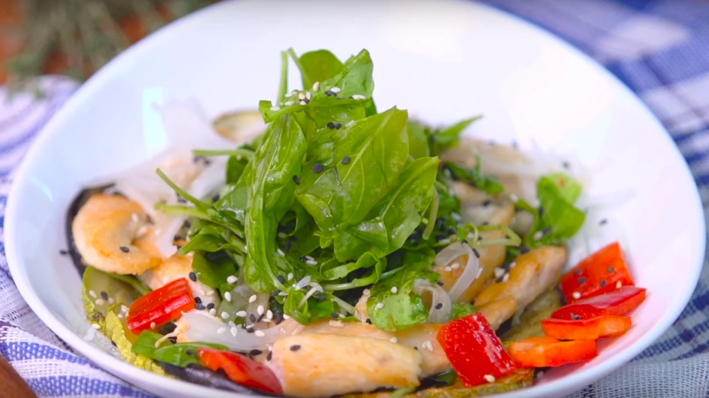

Ingredientes
- ½ pechuga de pollo
- Una berenjena
- Un zucchini
- ½ cebolla
- ½ pimiento rojo
- 20g de rúcula
- 60cc de aceite de oliva
- 20cc de aceto balsámico
- Sal y pimienta, a gusto
Preparación
- - Cortar ruedas de berenjena y zucchini con piel y asar en horno por 10 minutos. Reservar.
- - Cortar la cebolla en finas láminas y el pimiento en cubos.
- - Lavar las hojas de rúcula. Mezclar todos los ingredientes y reservar.
- - Cortar tiras de pollo de 1cm de lado y saltear 3 minutos en aceite de oliva.
- - Realizar una vinagreta disolviendo la sal y la pimienta en el aceto, agregar el aceite en forma de
hilo y mezclar para emulsionar.
- - Armar y aderezar la ensalada con dicha mezcla. Servir.
